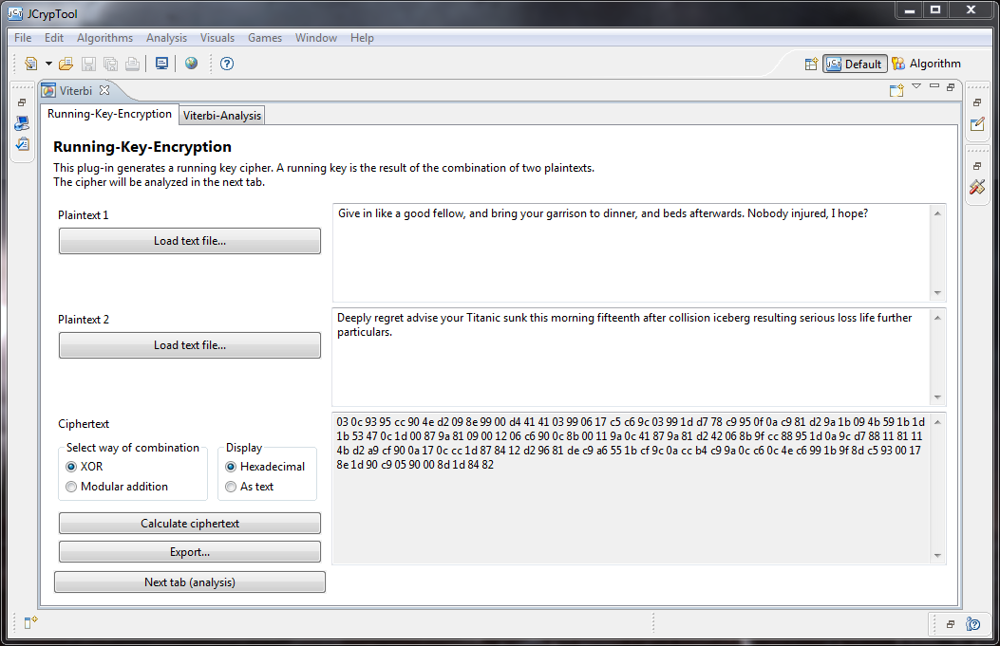
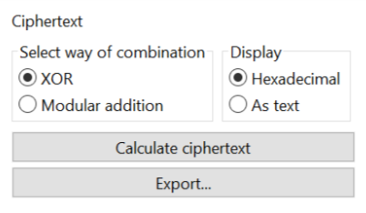
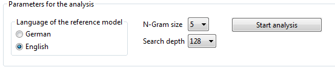
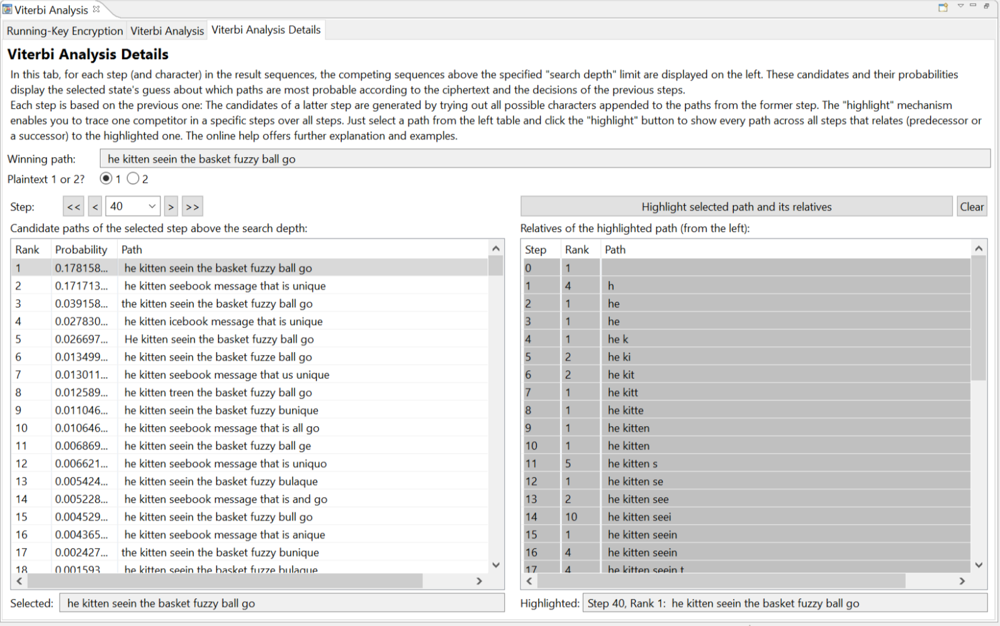
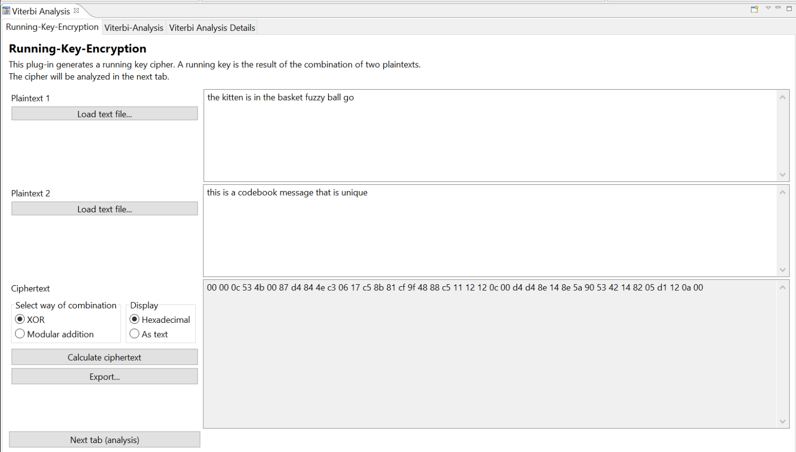
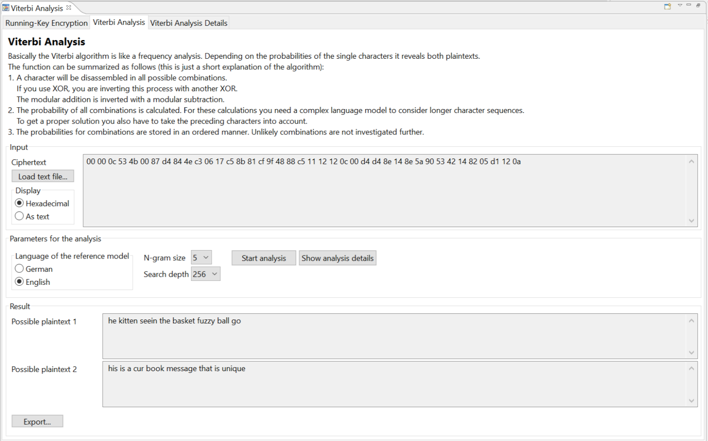
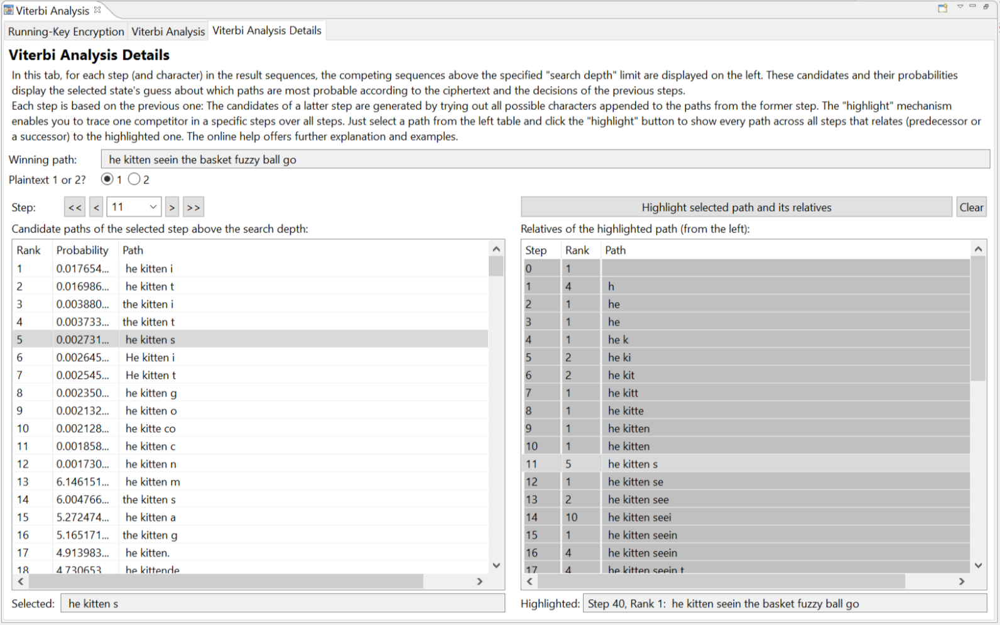
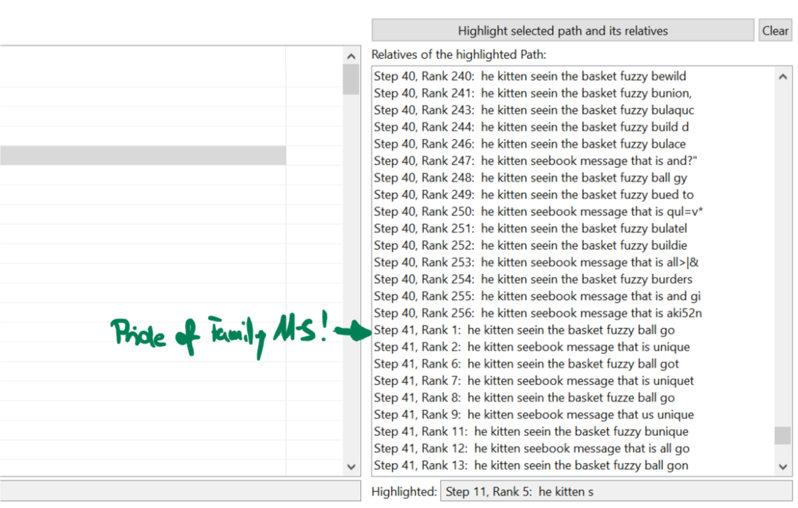
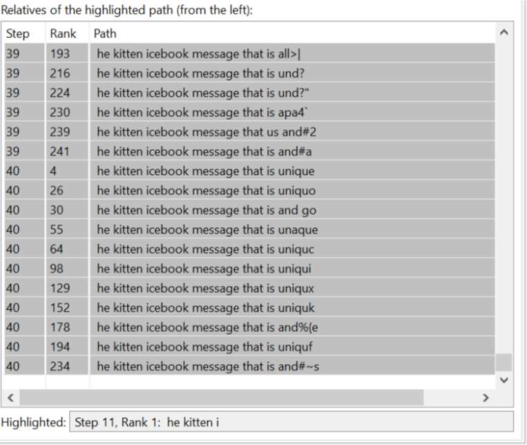

The Viterbi algorithm is used to break a running-key cipher [1] in a ciphertext-only mode.
The running-key cipher combines two plaintexts using methods like XOR on the single characters to generate a ciphertext.
Like in a book cipher you may consider one plaintext as key stream (derived from the password), and the other plaintext as the message to encrypt. The password should be at least as long as the message (if not it is used cyclicly again). If the message has a length of \(n\) characters, the input of the running-key encryption has a length of \(2 \cdot n\) characters (message and key). As output we get a ciphertext of length \(n\).
If one of the two plaintexts is known, it is very easy to recover the other. However, in our case here, only the ciphertext is known, and the Viterbi analysis generates the double amount of plaintext (message and key) with an astonishing accuracy (remark: only if the key stream is not random but normal text). The Viterbi algorithm is based on the assumption, that the plaintexts have similar patterns as text in ordinary books. The underlying hidden Markov model [2] uses frequency distribution of sequences of letters. The development of this code is based on the work of M. Ekerå and B. Terelius [3].
The Viterbi algorithm is a deterministic algorithm (it runs the same way every time for the same parameters). There is no heuristic termination necessary. The Markov order (\(n\)-gram length) implicates the order of dependency from one iteration of the analysis to another, with higher order implying a more "informed" behavior (by past steps).
In the following, the three tabs of the user interface are introduced, then the procedure is explained with a example step-by-step. At the end, there is a FAQ, ideas for further development, and references to the method used.

First, you have to generate a ciphertext. To do so, the tab "Running-Key Encryption" provides methods to combine two plaintexts. The plaintexts can be either entered manually or loaded from text files.

The ciphertext can be generated using XOR or modular addition. To generate the ciphertext press the button "Calculate ciphertext". Because the ciphertext often contains non-printable characters, it is normally displayed in hexadecimal form. Pressing the button "Continue with next tab (Analysis)" copies the ciphertext to the 2nd tab.
If you want to use this plugin solely for running-key encryption (for obvious reasons not recommended) the "Export" button can be used to store the ciphertext into a text file (which receive the hex digits as shown here).
The password of a book cipher is just used to find the place in the book from where the key stream is taken from. If a really random key stream is used instead, the running-key cipher is becoming a one-time pad (OTP) which cannot be solved with the statistical methods of the Viterbi analysis.
The second tab focuses on the actual attack against the ciphertext. If the ciphertext was generated using the first tab, it was loaded automatically into this tab. Alternatively, you can load here the ciphertext to be analyzed from a text file.

As the whole analysis is based on the language model, it is important to select the expected language of the plaintexts before beginning the analysis. The parameter "N-gram size" defines the maximum length of the analyzed sequences. Currently, only the \(n\)-grams with a length from 1 to 5 are possible (these are stored as pre-calculated tables) to save disc space. The parameter "Search depth" influences the quality of the results: A higher search depth improves the results but decreases performance. To see the results press the button "Start analysis". Again, the results with the decrypted plaintexts can be exported into text files.
By clicking the button "Show analysis details" (it only becomes active when the analysis is finished), you can look into the details of the various analysis steps in the 3rd tab.

In the tab "Viterbi Analysis Details", you get a view of the paths the algorithm traced through the set of possible plaintexts. The table to the left shows, in order of descending probability, the most probable paths in every step where a step is also a single character of the ciphertext. The topmost candidate in the table for the last step is the "winner" and is the solution displayed in the prior tab. Since you can look up from which candidate in the prior step the "winner" originated from (same beginning of path), it can be observed how the solution was found in a character by character fashion.
A powerful tool for this is the "highlighted path". On the right, you can set a path from the table on the left as "highlighted", which displays all paths throughout the whole analysis which have all characters in common (called "siblings"). The displayed set of siblings is a sort of "history" of the highlighted path in a step, and also it's "future", as all paths that were produced starting from the highlighted one in the later steps are displayed. In practice this is not as confusing as it sounds, see the example below for more context.
As an example, we take as text 1
"the kitten is in the basket fuzzy ball go"
and as text 2
"this is a codebook message that is unique".
We use the XOR scheme.
We observe that the first two characters ("th") of the plaintexts are equal. Therefore, the combination via XOR yields the result "00" for both positions.

The calculation of "0c", the result at the third position of the ciphertext, results from the XOR combination of the character codes of the letters "i" and "e" of the respective texts 1 and 2.

We go into the analysis tab, choose the best possible parameters, and click the button "Start analysis".

Discussion: Because of the mentioned weakness of the Viterbi algorithm at the start of the decoding, the word "the" of the first plaintext could not be found correctly. It is likely that with equal starting phrases "th" a random guessing of frequent alphabet characters was encouraged. The rest of the decoded texts contains some other mistakes; nevertheless the meaning can be discerned by looking at them.
As mentioned before, the exodus of the winning path can be traced using the analysis details tab. Let's enter it using the button ""Show analysis details, which gets available after the analysis has finished.
By setting the "winner" path (last step, rank 1) as highlighted straight away, we can see its predecessors in the right list. Right off the bat, we can observe that by no means the predecessors of the "winner" were all top-ranked. The following screenshot shows how the program looks like after selecting the winner path (button "Highlight selected path and its relatives" on the right side):
We now turn to investigate on a peculiar string of characters in the result: the output of the analysis reads "he kitten *s*eein the basket fuzzy ball go" and differs from the original text in five characters beginning at the 11. character ("seein" instead of "is in").

At rank 1 there, we see that "i" was after all the top-ranked choice there. As becomes more clear later, that did not hinder the successors of the "s" in convincing the pretrained (imperfect) language model that "seein" was the way to go. It is not too far-fetched: Both have the "in" in latter positions, and "see" as well as "seein" are perfectly common sequences in the English language. It has to be taken into account also, that plaintext 1 and plaintext 2 are co-dependent via XOR and plaintext 2 also has to convince the language model. With the radiobuttons above one can control which track of "1" or "2" to view (for the sake of simplicity, we will leave off that in the course of this example).
To close this example, we will inspect the successors of our both "adversaries", "11-i" (correct) and "11-s" (predecessor of the "winner"). The following screenshots show the lists on the right with the candidates "11-i" and "11-s" highlighted, respectively. We already know that in the successors of "11-s", we will find the winner. Et voila:

But what happened with "11-i"? Here are its successors:

It appears, no other combination than "icebook" could convince the algorithm (at last, only three ranks short of the "winner"). It is not a given that a candidate successor has to appear in the last step though – it could also have been cut off by the "search depth" setting which defines the height of the table on the left for every step, everything below is unavailable for the following steps.
Tracing all the stacks for what happened in steps after "11-i" is left to the enthusiastic reader. It is often helpful to look what the other plaintext reads when facing a counterintuitive decision by the analysis. Cutting off is necessary for performance reasons.
The example plaintexts are available as templates in the first tab of the program. Happy fiddling!
This is due to the XOR combination being commutative operations that don't care whether an argument is on their left or right side. When disassembling the ciphertext, the language model cannot decide which character belongs to which plaintext; and in the beginning, we don't know at all so it is a random binary choice at the exodus of the analysis.
As stated above, the XOR is commutative and so it is only due to the historic context of candidate paths (\(n\)-grams) that the algorithm knows how to flip it in each step. Sometimes the historic contexts of both paths converge (same previous \(n\)-grams) at which point the algorithm has to guess.
To determine about single characters the algorithm only considers their frequencies. So, a "z" looks almost the same as a "?" and is familiar to even a "`" (both infrequent).
At the moment, both plaintexts have to be of the same language for the analysis to work correctly.
The start of the analyzed output often reads way worse than the later sequences. This is due to predecessor \(n\)-gram information not being available and supporting the later descisions for the first n characters. This propagates into the later steps of the analysis, but loses in influence with later steps.
[1] Running-key cipher at Wikipedia: http://en.wikipedia.org/wiki/Running_key_cipher
[2] Hidden Markov model at Wikipedia: http://en.wikipedia.org/wiki/Hidden_Markov_model
[3] M. Ekerå and B. Terelius. "Automatic solution in depth of one time pads". Royal Institute of Technology, Stockholm, Sweden. March 2008. http://www.csc.kth.se/utbildning/kth/kurser/DD2449/krypto09/pdf/rapport_vernam080309.pdf.
[4] Sravana Reddy and Kevin Knight. Decoding running key ciphers. ACL '12 Proceedings of the 50th Annual Meeting of the Association for Computational Linguistics: Short Papers – Volume 2. 2012.